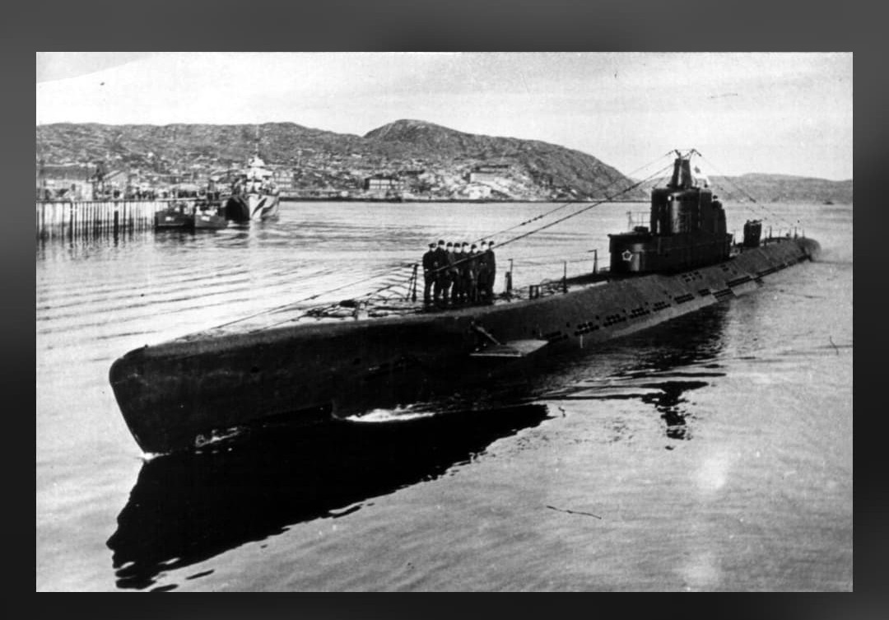
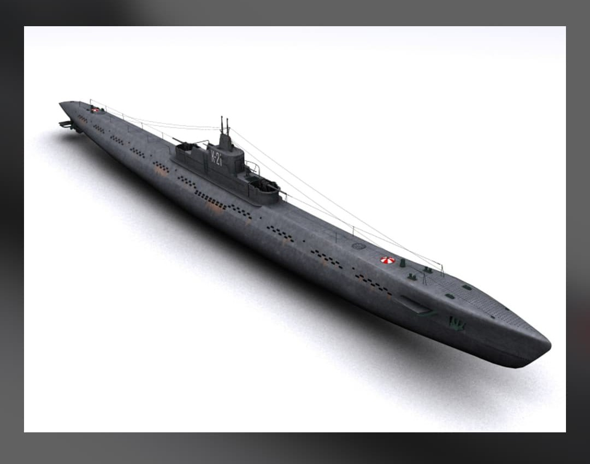
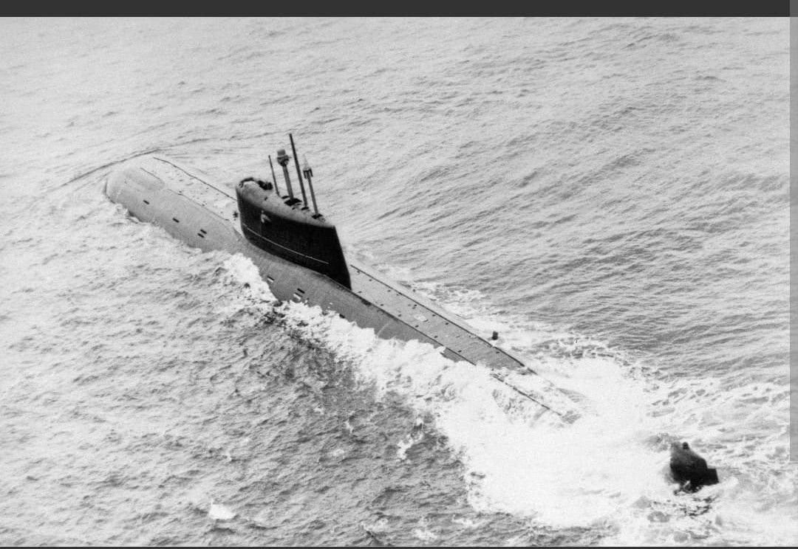

Les croiseurs sous-marins géants à longue portée de la Marine soviétique

La classe K (pour Kreyserskaya – « Croiseur », surnommée Katjusa) représente la catégorie de sous-marins la plus imposante et la plus lourdement armée développée par l'URSS avant le déclenchement du second conflit mondial.
Conçus pour mener des patrouilles océaniques autonomes à longue distance, ces navires combinaient un puissant armement de torpilles, deux canons lourds d'artillerie et une capacité de mouillage de mines navales.
Élaborée par l'ingénieur M.A. Rudnitsky, la classe K disposait d'une double coque robuste et d'une motorisation très puissante autorisant des vitesses en surface de plus de 22 nœuds, leur permettant de naviguer de concert avec des escadres de surface.

Affectés en majorité à la Flotte du Nord, les croiseurs sous-marins de la classe K ont patrouillé le long des côtes norvégiennes occupées pour intercepter le trafic de minerai de fer et attaquer les convois allemands.
Le plus célèbre d'entre eux, le K-21 commandé par Nikolaï Lunin, est entré dans l'histoire pour son attaque à la torpille en juillet 1942 contre le cuirassé allemand Tirpitz lors de l'opération contre le convoi PQ-17.

Sur les 12 unités construites, plusieurs furent perdues dans les eaux glacées de l'Arctique. Le *K-21* a été préservé et transformé en navire-musée à Severomorsk.
Page du Musée HOP WW2 – Section Marine Soviétique